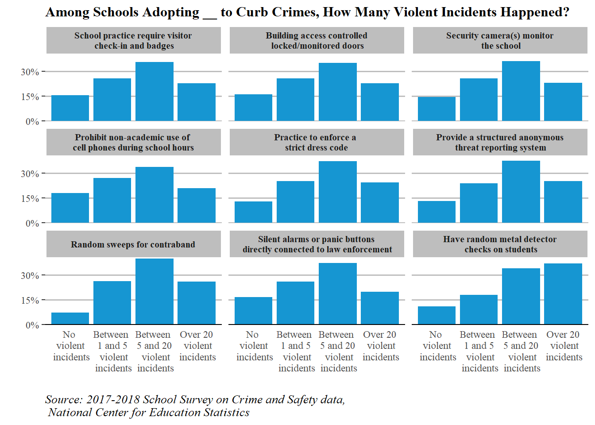
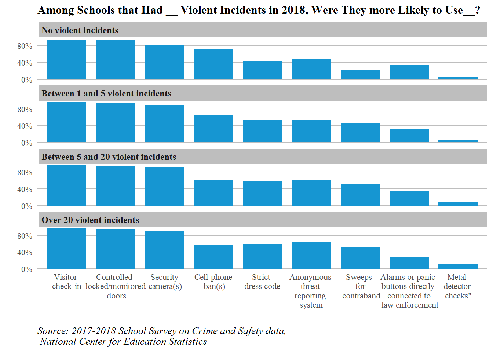

Small-multiple charts, what they are, and how to build them in R
Author
Vincent Liu
Published
March 1, 2023
PART I: Explorative Data Analysis
Setting up the environment
First, we load all packages, data, and helper functions. Note here I use relative paths to ease the process.
Code
library(haven) # read SAS, STATA, SPSS fileslibrary(tidyverse) # tidyverse universelibrary(expss) # use data labelsdata_path <-"../ggplot theme customization guide/data/"ssocs18 <-read_sas(paste0(data_path, "pu_ssocs18.sas7bdat"))ssocs08 <-read_sas(paste0(data_path, "pu_ssocs08.sas7bdat"))# load previously written helper functionsfunc_path <-"func/"source(paste0(func_path, "strategey_by_school_violent_incident_num.R"))source(paste0(func_path, "school_violent_incident_num_by_strategy.R"))
Creating Multiple Small Aggregated Tables
I have written a helper function that will help me do the task of creating the small aggregated table using multiple dplyr expressions. The function is stored in the func sub-directory and has been loaded above.
With the helper function, I made multiple tables, each of which is in accordance to a anti-violence method included in the survey. I then joined them together and recoded them so that I can use it to build our small-multiple bar charts
Note: methods are arbitrarily selected on two criteria: the degree to which the method sheds light on the mass-surveillance culture in schools and the prevalence of these methods. Subjective selections sometime matter because data science is both a science and an art that requires both solid skills and strong domain knowledge.
Now I renamed these nine methods so that long names will go to a few lines. This would help our charts look nicer.
Code
# recoding method names to break them into a few linest <- t %>%mutate(Strategy = dplyr::recode(Strategy, `Prohibit non-academic use of cell phones or smartphones during school hours`="Prohibit non-academic use of \ncell phones during school hours",`Silent alarms or panic buttons directly connected to law enforcement`="Silent alarms or panic buttons\n directly connected to law enforcement",`School practice require visitor check in and badges`="School practice require visitor\n check-in and badges",`Building access controlled locked/monitored doors`="Building access controlled\n locked/monitored doors",`Have random metal detector checks on students`="Have random metal detector\n checks on students",`Security camera(s) monitor the school`="Security camera(s) monitor\n the school",`Practice to enforce a strict dress code`="Practice to enforce a \nstrict dress code",`Provide a structured anonymous threat reporting system`="Provide a structured anonymous\n threat reporting system"# `Random sweeps for contraband` )) %>%mutate(Strategy =factor(Strategy,levels =c("School practice require visitor\n check-in and badges", "Building access controlled\n locked/monitored doors","Security camera(s) monitor\n the school","Prohibit non-academic use of \ncell phones during school hours","Practice to enforce a \nstrict dress code","Provide a structured anonymous\n threat reporting system","Random sweeps for contraband","Silent alarms or panic buttons\n directly connected to law enforcement","Have random metal detector\n checks on students" )))
Building Small Multiple Charts
Now we build the small multiple charts to investigate the prevalence of selected anti-crime methods. We look at this issue from two angles, starting with the proportion of schools adopting each policy by the number of violent incidents happened at the school.
Code
t %>%ggplot(aes(x =`Violent Incident Group`, y = Percent)) +geom_col(position ='dodge', fill ="#1696d2") +theme_classic()+scale_y_continuous(expand =c(0,0),labels = scales::percent,breaks =c(0,.15,.3)) +facet_wrap(~Strategy, nrow=4) +labs(title ="Among Schools Adopting __ to Curb Crimes, How Many Violent Incidents Happened?",caption ="Source: 2017-2018 School Survey on Crime and Safety data,\n National Center for Education Statistics",x ="",y ="") +theme(legend.position ="none",axis.line.y =element_blank(),panel.grid.major.y =element_line(linetype="solid", # add grid linecolor ="grey",size =0.6),axis.ticks =element_blank(),axis.ticks.x =element_blank(),text =element_text(family ="serif"), # format textsplot.title =element_text(size =12, face="bold",hjust=0),plot.caption =element_text(size =10, face ="italic",hjust=0),strip.background =element_rect(fill ="grey", # facet label backgroundcolor ="white"), # facet label textstrip.text.x =element_text(hjust=0.5,face ="bold",size =8)) # center facet label)

Next we show the same information but with the number of violent incidents as the facet variable.
v <- v %>%mutate(Strategy = dplyr::recode(Strategy, `Prohibit non-academic use of cell phones or smartphones during school hours`="Prohibit non-academic use of \ncell phones during school hours",`Silent alarms or panic buttons directly connected to law enforcement`="Silent alarms or panic buttons\n directly connected to law enforcement",`School practice require visitor check in and badges`="School practice require visitor\n check-in and badges",`Building access controlled locked/monitored doors`="Building access controlled\n locked/monitored doors",`Have random metal detector checks on students`="Have random metal detector\n checks on students",`Security camera(s) monitor the school`="Security camera(s) monitor\n the school",`Practice to enforce a strict dress code`="Practice to enforce a \nstrict dress code",`Provide a structured anonymous threat reporting system`="Provide a structured anonymous\n threat reporting system"# `Random sweeps for contraband` )) %>%mutate(Strategy =factor(Strategy,levels =c("School practice require visitor\n check-in and badges", "Building access controlled\n locked/monitored doors","Security camera(s) monitor\n the school","Prohibit non-academic use of \ncell phones during school hours","Practice to enforce a \nstrict dress code","Provide a structured anonymous\n threat reporting system","Random sweeps for contraband","Silent alarms or panic buttons\n directly connected to law enforcement","Have random metal detector\n checks on students" ))) %>%mutate(`Violent Incident Group`=factor(`Violent Incident Group`,levels =c("No violent incidents","Between 1 and 5 violent incidents","Between 5 and 20 violent incidents","Over 20 violent incidents" )))
Code
v %>%mutate(Strategy =fct_recode(Strategy,`Visitor \ncheck-in`="School practice require visitor\n check-in and badges",`Controlled \nlocked/monitored\n doors`="Building access controlled\n locked/monitored doors",`Security\n camera(s)`="Security camera(s) monitor\n the school",`Cell-phone\n ban(s)`="Prohibit non-academic use of \ncell phones during school hours",`Strict \ndress code`="Practice to enforce a \nstrict dress code",`Anonymous \nthreat \nreporting \nsystem`="Provide a structured anonymous\n threat reporting system",`Sweeps \nfor\n contraband`="Random sweeps for contraband",`Alarms or panic \nbuttons directly \nconnected to\n law enforcement`="Silent alarms or panic buttons\n directly connected to law enforcement",`Metal \ndetector \nchecks"`="Have random metal detector\n checks on students" )) %>%ggplot(aes(x = Strategy, y = Percent)) +geom_col(position ='dodge', fill ="#1696d2", width = .8) +theme_classic()+facet_wrap(~`Violent Incident Group`, nrow=4) +# note add parameter as_labeller(c(old_label = new_label)) # can change label namescale_y_continuous(expand =c(0,0),labels = scales::percent,breaks =c(0,.4, .8)) +labs(title ="Among Schools that Had __ Violent Incidents in 2018, Were They more Likely to Use__?",caption ="Source: 2017-2018 School Survey on Crime and Safety data,\n National Center for Education Statistics",x ="",y ="") +theme(legend.position ="none",axis.line =element_blank(),axis.ticks =element_blank(),panel.grid.major.y =element_line(linetype="solid", # add grid linecolor ="grey",size =0.4),text =element_text(family ="serif"), # format textsplot.title =element_text(size =12, face="bold",hjust=0),plot.caption =element_text(size =10, face ="italic",hjust=0),strip.background =element_rect(fill ="grey", # facet label backgroundcolor ="white"), # facet label textstrip.text.x =element_text(hjust=0,face ="bold",size =9.5)) # center facet label)

As we can tell, for most of the anti-crime policies, schools with divergent violent incident levels in 2019 were equally as likely to adopt them. However, schools where a lot of violent incidents (>5) occurred had a higher proportion of enforcing a strict dress code, doing sweeps for contraband searches, and conducting metal detect checks than schools where fewer than 5 violent incidents happened. Surprisingly, the same pattern is not reflected on the method of installing alarms or panic buttons directly corrected to law enforcement, for which schools where over 20 violent incident happened seemed to be the least likely to do so. Does that suggest violent incidents is associated with low law enforcement control? We still need to find out.
---title: "The Sky Has A Million Stars, And Their Glow Composes a Poem"subtitle: "Small-multiple charts, what they are, and how to build them in R"author: "Vincent Liu"date: "`r format(Sys.time(), '%d %B, %Y')`"format: html: theme: yeti toc: true toc-title: "Table of Contents" code-fold: true code-tools: true code-block-border-left: "#31BAE9" smooth-scroll: true link-external-icon: true link-external-newwindow: trueexecute: warning: false message: false---## PART I: Explorative Data Analysis### Setting up the environmentFirst, we load all packages, data, and helper functions. Note here I use relative paths to ease the process. ```{r}library(haven) # read SAS, STATA, SPSS fileslibrary(tidyverse) # tidyverse universelibrary(expss) # use data labelsdata_path <-"../ggplot theme customization guide/data/"ssocs18 <-read_sas(paste0(data_path, "pu_ssocs18.sas7bdat"))ssocs08 <-read_sas(paste0(data_path, "pu_ssocs08.sas7bdat"))# load previously written helper functionsfunc_path <-"func/"source(paste0(func_path, "strategey_by_school_violent_incident_num.R"))source(paste0(func_path, "school_violent_incident_num_by_strategy.R"))```### Creating Multiple Small Aggregated TablesI have written a helper function that will help me do the task of creating the small aggregated table using multiple `dplyr` expressions. The function is stored in the *func* sub-directory and has been loaded above. With the helper function, I made multiple tables, each of which is in accordance to a anti-violence method included in the survey. I then joined them together and recoded them so that I can use it to build our small-multiple bar chartsNote: methods are arbitrarily selected on two criteria: the degree to which the method sheds light on the mass-surveillance culture in schools and the prevalence of these methods. Subjective selections sometime matter because data science is both a science and an art that requires both solid skills and strong domain knowledge.```{r}t1 <-# visitor check inget_strategy_by_violent_incident( ssocs18, C0110, VIOINC18)t2 <-# building accessget_strategy_by_violent_incident( ssocs18, C0112, VIOINC18)t3 <-# security cameraget_strategy_by_violent_incident( ssocs18, C0146, VIOINC18)t4 <-# cell phone banget_strategy_by_violent_incident( ssocs18, C0153, VIOINC18)t5 <-# dress codeget_strategy_by_violent_incident( ssocs18, C0136, VIOINC18)t6 <-# threat reporting systemget_strategy_by_violent_incident( ssocs18, C0143, VIOINC18)t7 <-# contraband sweepget_strategy_by_violent_incident( ssocs18, C0125, VIOINC18) t8 <-# panic button that contacts law enforcement get_strategy_by_violent_incident( ssocs18, C0139, VIOINC18)t9 <-# metal detectorget_strategy_by_violent_incident( ssocs18, C0120, VIOINC18)# combiningt <-rbind(t1,t2,t3, t4,t5,t6, t7,t8,t9)```Now I renamed these nine methods so that long names will go to a few lines. This would help our charts look nicer. ```{r}# recoding method names to break them into a few linest <- t %>%mutate(Strategy = dplyr::recode(Strategy, `Prohibit non-academic use of cell phones or smartphones during school hours`="Prohibit non-academic use of \ncell phones during school hours",`Silent alarms or panic buttons directly connected to law enforcement`="Silent alarms or panic buttons\n directly connected to law enforcement",`School practice require visitor check in and badges`="School practice require visitor\n check-in and badges",`Building access controlled locked/monitored doors`="Building access controlled\n locked/monitored doors",`Have random metal detector checks on students`="Have random metal detector\n checks on students",`Security camera(s) monitor the school`="Security camera(s) monitor\n the school",`Practice to enforce a strict dress code`="Practice to enforce a \nstrict dress code",`Provide a structured anonymous threat reporting system`="Provide a structured anonymous\n threat reporting system"# `Random sweeps for contraband` )) %>%mutate(Strategy =factor(Strategy,levels =c("School practice require visitor\n check-in and badges", "Building access controlled\n locked/monitored doors","Security camera(s) monitor\n the school","Prohibit non-academic use of \ncell phones during school hours","Practice to enforce a \nstrict dress code","Provide a structured anonymous\n threat reporting system","Random sweeps for contraband","Silent alarms or panic buttons\n directly connected to law enforcement","Have random metal detector\n checks on students" )))```### Building Small Multiple ChartsNow we build the small multiple charts to investigate the prevalence of selected anti-crime methods. We look at this issue from two angles, starting with the proportion of schools adopting each policy by the number of violent incidents happened at the school. ```{r}t %>%ggplot(aes(x =`Violent Incident Group`, y = Percent)) +geom_col(position ='dodge', fill ="#1696d2") +theme_classic()+scale_y_continuous(expand =c(0,0),labels = scales::percent,breaks =c(0,.15,.3)) +facet_wrap(~Strategy, nrow=4) +labs(title ="Among Schools Adopting __ to Curb Crimes, How Many Violent Incidents Happened?",caption ="Source: 2017-2018 School Survey on Crime and Safety data,\n National Center for Education Statistics",x ="",y ="") +theme(legend.position ="none",axis.line.y =element_blank(),panel.grid.major.y =element_line(linetype="solid", # add grid linecolor ="grey",size =0.6),axis.ticks =element_blank(),axis.ticks.x =element_blank(),text =element_text(family ="serif"), # format textsplot.title =element_text(size =12, face="bold",hjust=0),plot.caption =element_text(size =10, face ="italic",hjust=0),strip.background =element_rect(fill ="grey", # facet label backgroundcolor ="white"), # facet label textstrip.text.x =element_text(hjust=0.5,face ="bold",size =8)) # center facet label) ```Next we show the same information but with the number of violent incidents as the facet variable.```{r}v1 <-get_violent_incident_by_strategy( ssocs18, C0110, VIOINC18)v2 <-# building accessget_violent_incident_by_strategy( ssocs18, C0112, VIOINC18)v3 <-# security cameraget_violent_incident_by_strategy( ssocs18, C0146, VIOINC18)v4 <-# cell phone banget_violent_incident_by_strategy( ssocs18, C0153, VIOINC18)v5 <-# dress codeget_violent_incident_by_strategy( ssocs18, C0136, VIOINC18)v6 <-# threat reporting systemget_violent_incident_by_strategy( ssocs18, C0143, VIOINC18)v7 <-# contraband sweepget_violent_incident_by_strategy( ssocs18, C0125, VIOINC18) v8 <-# panic button that contacts law enforcement get_violent_incident_by_strategy( ssocs18, C0139, VIOINC18)v9 <-# metal detectorget_violent_incident_by_strategy( ssocs18, C0120, VIOINC18)# combiningv <-rbind(v1,v2,v3, v4,v5,v6, v7,v8,v9)``````{r}v <- v %>%mutate(Strategy = dplyr::recode(Strategy, `Prohibit non-academic use of cell phones or smartphones during school hours`="Prohibit non-academic use of \ncell phones during school hours",`Silent alarms or panic buttons directly connected to law enforcement`="Silent alarms or panic buttons\n directly connected to law enforcement",`School practice require visitor check in and badges`="School practice require visitor\n check-in and badges",`Building access controlled locked/monitored doors`="Building access controlled\n locked/monitored doors",`Have random metal detector checks on students`="Have random metal detector\n checks on students",`Security camera(s) monitor the school`="Security camera(s) monitor\n the school",`Practice to enforce a strict dress code`="Practice to enforce a \nstrict dress code",`Provide a structured anonymous threat reporting system`="Provide a structured anonymous\n threat reporting system"# `Random sweeps for contraband` )) %>%mutate(Strategy =factor(Strategy,levels =c("School practice require visitor\n check-in and badges", "Building access controlled\n locked/monitored doors","Security camera(s) monitor\n the school","Prohibit non-academic use of \ncell phones during school hours","Practice to enforce a \nstrict dress code","Provide a structured anonymous\n threat reporting system","Random sweeps for contraband","Silent alarms or panic buttons\n directly connected to law enforcement","Have random metal detector\n checks on students" ))) %>%mutate(`Violent Incident Group`=factor(`Violent Incident Group`,levels =c("No violent incidents","Between 1 and 5 violent incidents","Between 5 and 20 violent incidents","Over 20 violent incidents" )))``````{r}v %>%mutate(Strategy =fct_recode(Strategy,`Visitor \ncheck-in`="School practice require visitor\n check-in and badges",`Controlled \nlocked/monitored\n doors`="Building access controlled\n locked/monitored doors",`Security\n camera(s)`="Security camera(s) monitor\n the school",`Cell-phone\n ban(s)`="Prohibit non-academic use of \ncell phones during school hours",`Strict \ndress code`="Practice to enforce a \nstrict dress code",`Anonymous \nthreat \nreporting \nsystem`="Provide a structured anonymous\n threat reporting system",`Sweeps \nfor\n contraband`="Random sweeps for contraband",`Alarms or panic \nbuttons directly \nconnected to\n law enforcement`="Silent alarms or panic buttons\n directly connected to law enforcement",`Metal \ndetector \nchecks"`="Have random metal detector\n checks on students" )) %>%ggplot(aes(x = Strategy, y = Percent)) +geom_col(position ='dodge', fill ="#1696d2", width = .8) +theme_classic()+facet_wrap(~`Violent Incident Group`, nrow=4) +# note add parameter as_labeller(c(old_label = new_label)) # can change label namescale_y_continuous(expand =c(0,0),labels = scales::percent,breaks =c(0,.4, .8)) +labs(title ="Among Schools that Had __ Violent Incidents in 2018, Were They more Likely to Use__?",caption ="Source: 2017-2018 School Survey on Crime and Safety data,\n National Center for Education Statistics",x ="",y ="") +theme(legend.position ="none",axis.line =element_blank(),axis.ticks =element_blank(),panel.grid.major.y =element_line(linetype="solid", # add grid linecolor ="grey",size =0.4),text =element_text(family ="serif"), # format textsplot.title =element_text(size =12, face="bold",hjust=0),plot.caption =element_text(size =10, face ="italic",hjust=0),strip.background =element_rect(fill ="grey", # facet label backgroundcolor ="white"), # facet label textstrip.text.x =element_text(hjust=0,face ="bold",size =9.5)) # center facet label)```As we can tell, for most of the anti-crime policies, schools with divergent violent incident levels in 2019 were equally as likely to adopt them. However, schools where a lot of violent incidents (>5) occurred had a higher proportion of enforcing a strict dress code, doing sweeps for contraband searches, and conducting metal detect checks than schools where fewer than 5 violent incidents happened. Surprisingly, the same pattern is not reflected on the method of installing alarms or panic buttons directly corrected to law enforcement, for which schools where over 20 violent incident happened seemed to be the least likely to do so. Does that suggest violent incidents is associated with low law enforcement control? We still need to find out. ## PART II: Replication Requirements### Saving Data```{r}#| eval: falsewrite.csv(t, "Output data/dist_by_viol_incidents_among_schools_adopting_policies.csv")write.csv(v,"Output data/prop_adopting_policies_given_school_viol_incidents.csv")```### Session Information```{r}sessioninfo::session_info()```